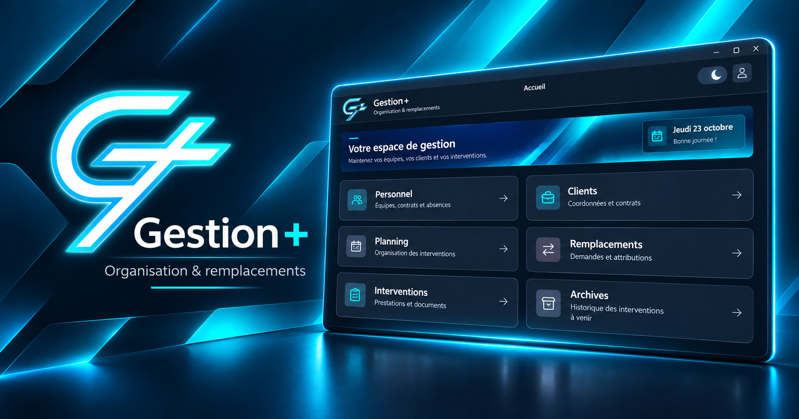

Gestion+
Projet personnel de logiciel de gestion du personnel, des interventions et des remplacements, développé en Java avec une interface Swing.
⚠️ Version expérimentale — Client encore largement incomplet
Cette démonstration Windows permet de découvrir une partie du travail réalisé. Elle utilise des données entièrement fictives et un stockage CSV local. Elle ne constitue pas une version prête pour la production.
Pour essayer l'application : téléchargez le ZIP, extrayez-le entièrement, puis lancez GestionPlus.exe. Java est déjà inclus.